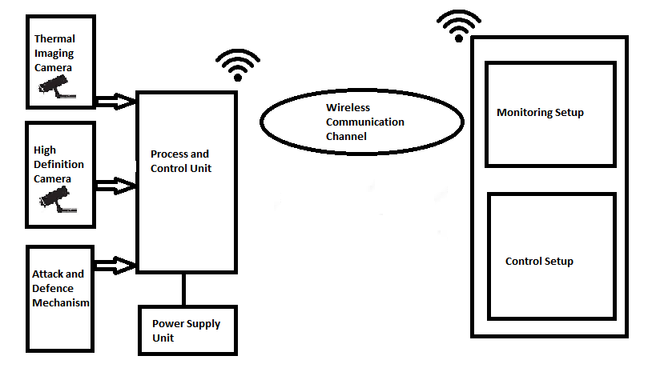
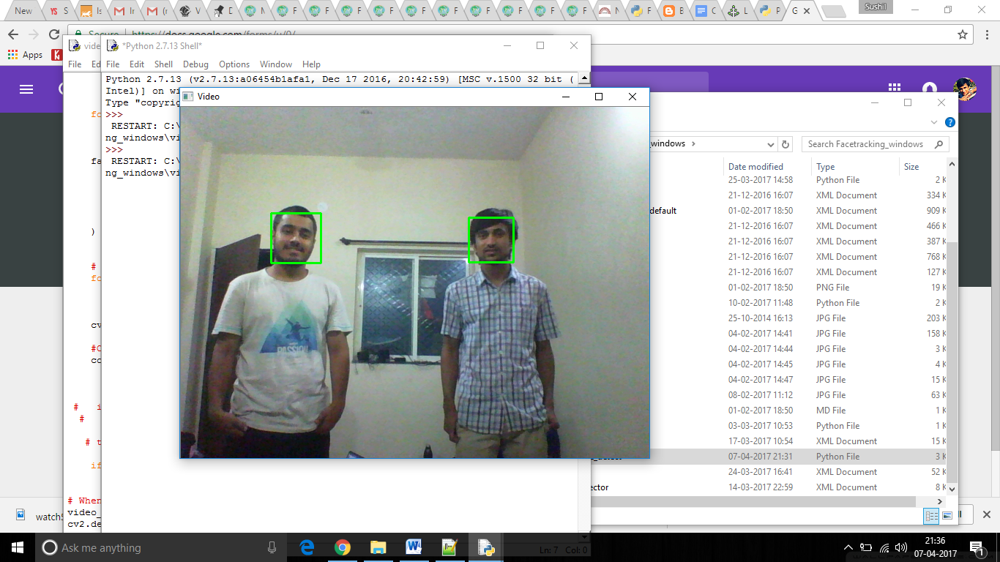

Border Security Surveillance Bot with Controlled Ammunitions
Stopping intrusion along the geographic borders of India
Terrorist infiltration and intrusion along the international
borders has been an inevitable predicament in recent times.
The current solutions [Till 2017] detect human intrusion only when it is
occurring or has occurred (Laser Wall / Fencing /Floodlighting etc.).
The Border Security Surveillance Bot can
help the Security Forces to detect the intrusion before it occurs
along with a controlled instant firing mechanism.
-
Developers
- Ahmed Patil
- Apremeyan Iyer
- Shubam Kulkarni
- Sushil Patil
-
Funded By
- Pune Institute of Computer Technology, Pune

A series of Self Powered (Solar Powered) Static Bots with a set of cameras can be installed that can detect any human intervention with a specific range, using Computer Vision . This bot also includes a firing mechanism which will be triggered through the Monitoring and Control Centre. In the future scope of the project the bots will be integrated within a single network and a live feed will be given from each camera to the control room.
Problem Statement
Design and implement a Series of Static Border Security Surveillance Bots with following features
- Prior detection of human intervention within a specific range.
- Controlled ammunition triggering mechanism for firing, through the “Command and Control Centre”.
- Future Scope Integration of all the bots into a single network for Live Feed through Camera along with the location of intrusion.
How it works?
Data Acquisition - High Definition Camera will capture the video frames and send it to the ‘Processor and Control Unit’; this solves the problem of human intervention in day-light. But, as most of the time the intrusions occur in night-time so a thermal camera will capture frames in night.
Attack and Defence Mechanism (Firing) - A small pellet firing gun will be installed on the bot, which will fire after a command will be given through the ‘Monitoring and Control Room’ after analysing the strength of threat. This will use a pneumatic control for the triggering. The target will be according to the human detected in the image captured through the cameras.
Video Processing - The frames delivered to the Processor will be processed for the detection of human being in the image. This will be done using Histogram of Gradients in opencv.
Monitoring and Control Room - All the processed data will be displayed in this room where a live feed will be available through each bot, once a threat is detected in any of the bot warning will be generated and the location of the Bot which has detected the threat will be displayed along with the live feed.
Power Source - The primary source of bot will be a solar panel and a battery, also a parallel AC supply will be present in emergency situations. The bot will be designed so as to operate on least possible power for extended period of operation using primary source.
Hardware Used
- Thermal Imaging Camera
- HD camera
- Raspberry pi/Beagle bone black/i3 based boards
- Atmel Atmega 328/Atmega 2560 Microcontroller board
- Servo Motors (4)
- Console Controller/Gamepad
- Wireless Transceivers
- Wifi Router
- Zigbee/RF Modules
- Mechanical structure (as per requirement)
- Opencv
- Python
- Anaconda Navigator
- AVR studio
- Arduino IDE
- Embedded C
Libraries / Softwares / Languages used